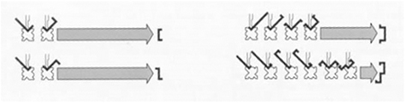
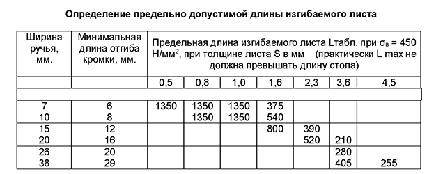

И1020А
Пресс листогибочный пневматический
843 091 ₽Под заказ
- Размеры станка
- 1230 х 780 х 1730 мм
- Масса
- 1025 кг
Назначение
Пресс листогибочный гидравлический модели И1020А усилием 100 кН предназначен для изготовления деталей из листового и полосового проката методом гибки. Пресс обладает высокой эффективностью производства и достаточной точностью при гибке листового металла.
Особенности
- В универсальном V-образном штампе, поставляемом в комплекте с прессами, можно производить гибку большого числа различных деталей. Технологические возможности прессов могут быть расширены за счет применения специальных приспособлений , поставляемых за отдельную плату, которые дадут возможность выполнять операции порезки листового материала, пробивки круглых и прямоугольных отверстий;
- Пресс может применяться на слесарных участках и цехах, занимающихся производством деталей мелких серий методом листовой штамповки;
- И1020А оснащён механизмом регулировки межштампового пространства и задним упором, служащим для установки изгибаемой заготовки на линию гибки;
- Управление прессом кнопочное двуручное и педальное;
- Пресс имеет малые габариты, надежен в работе и прост в эксплуатации;
- Применяется наиболее дешевый источник энергии – воздух;
- Смазка прессов – ручная;
- Система управления – релейная;
- Режим работы – одиночный ход.




Характеристики
| ПАРАМЕТР | ЗНАЧЕНИЕ |
|---|---|
| Номинальное усилие пресса, кН (тс) | 100 |
| Длина стола и ползуна, мм. | 1050 |
| Расстояние между стойками станины в свету, мм. | 690 |
| Пролеты ручьев матриц, мм. | 7, 10, 15, 20, 26, 38 |
| Толщина листа при макс. длине гибки, мм (при временном сопротивлении 450 Н/мм2) |
2,3 (А=38) |
| Макс. толщина изгибаемого листа на длине, мм (при временном сопротивлении 450 Н/мм2) |
4 х 325 |
| Наибольший ход ползуна, мм. | 40 |
| Ширина стола, мм. | 140 |
| Размер регулировки расстояния между столом и ползуном, мм. | 25 |
| Расстояние от оси ползуна до станины, мм. | 275 |
| Ход заднего упора, мм. | 240 |
| Максимальное число ходов в минуту | 12 |
| Рабочее давление сжатого воздуха, МПа | 0,5 |
| Расход сжатого воздуха, м3/ход | 0,01 |
| Габаритные размеры (LxBxH), мм. | 1230 х 780 х 1730 |
| Масса, кг. | 1025 |